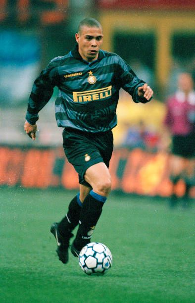

Ronaldo Nazário (R9)
Символ атакувального футболу 90-х: нечувана швидкість, баланс, еластіко, обман корпусом і холоднокровна реалізація моментів.
- Амплуа: центральний нападник
- Фішки: elastico, stepovers, удар носком
- Найкращий сезон: 1996/97 — 47 голів у 49 матчах за «Барселону», абсолютна домінація.
- Спадщина: вважається найтехнічнішим класичним «дев’ятим номером» в історії футболу.